Periodically you will receive a bank statement from your bank. You need to check that this agrees with the information that you have entered into MoneyWorks. This is called a Bank Reconciliation.
It is important that you do your bank reconciliations. If you don’t, your accountant will do them (and charge you accordingly).
Any MoneyWorks bank account can be reconciled, provided the Bank Account must be Reconciled option is set in the account record — see Bank Settings.
Thus you can use this feature for your petty cash, credit cards etc.
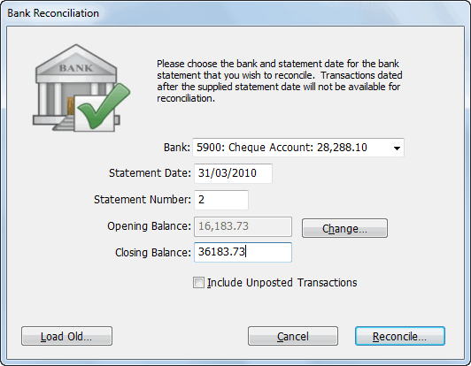
The Bank Reconciliation dialog box will be displayed.
pop-up menu
All the reconcilable bank accounts7 in your system appear in the pop-up menu. If you choose Other, you will be able to select any account for reconciliation.
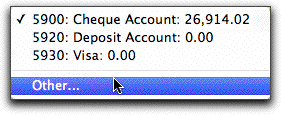
Choose the Other option to reconcile an account that is not a bank account.
Transactions dated after this will not show in the reconciliation.
Each page of your bank statement should be reconciled separately.
This will be found on the bank statement.
The Opening Balance is automatically maintained for you based on the previous reconciliations. You should never (and we mean never, never, never!) need to change it—if you do (and you can accomplish this by clicking the Change button), you have probably missed out a reconciliation or made some other error.
If you have not yet posted some of the transactions that are to be reconciled, set the Include Unposted Transactions check box
If this is set, MoneyWorks will display unposted as well as posted transactions in the bank reconciliation list— see Reconciling Unposted Transactions.
Click Reconcile to start the reconciliation
The Bank Reconciliation window is displayed. This is divided into two panes: reconciled transactions in the top pane, and all eligible transactions in the bottom. Eligible transactions are those (normally posted) payment, receipt and journal transactions against the nominated bank account which occurred on or before the statement date, and which have not previously been reconciled.
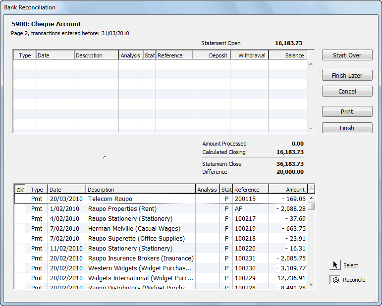
To mark a transaction as having been reconciled, locate it in the bottom pane and click on it—the transaction will be listed in the top pane (and greyed out in the bottom pane).Note: If you have imported your statement with the Auto Reconcile option set, the imported transactions will already be in the top pane.
The bottom pane consists of a normal MoneyWorks list that you can sort and customise in the usual manner — see Sorting Records and Customising Your List. It will most accurately approximate8 the order on your bank statement if sorted by date.
The Bank reconciliation window has two “modes” of operation, Reconcile and Select. In the Reconcile mode, you can mark transactions as being reconciled (or not); in the Select mode you can open transactions for viewing or, if they are unposted, modification. You can also add transactions. When the Bank Reconciliation window first opens it will be in Reconcile mode.
The transaction will be appended to the list in the top pane, and the one in the bottom will be greyed out, and a face icon placed in the OK column (it will be smiling if it was a receipt).
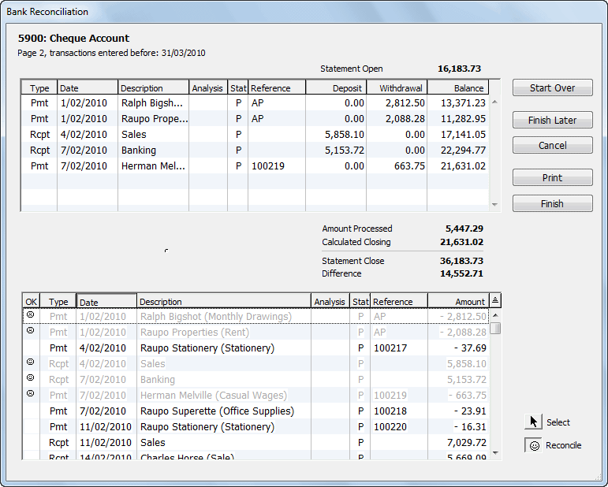
To unmark a transaction, click on it again (in the lower pane).
Tip: Although you can’t sort the top list, you can drag the transactions up and down. This means that you can (if you wish) get them into the same order as they appear on the bank statement.
Tip: You can use the up and down arrow keys and the space-bar to accomplish the reconciliation from your keyboard. The arrow keys move the current selection (identified by dotted lines) up or down; the space-bar marks the record as being reconciled (or unreconciled if it was already reconciled).
You should start at the top of the bank statement and work systematically down. Note that the top pane contains a running balance which you can compare with that on your bank statement.
Reconciled transactions are added to the Amount Processed which is shown in the summary area at the bottom of the top pane. This is the total of the marked movements in and out of the account.
This total is subtracted from the opening balance entered in the first stage of the reconciliation and checked against the closing balance for the current statement page. Any discrepancy appears as the Difference figure in the summary.
This lists the opening and closing bank balances, the reconciled transactions and the unpresented cheques. It should be filed with your bank statement as proof that your accounts match the bank’s.
Pressing Ctrl-P/⌘-P will print all the transactions listed in the dialog box without any summary data.
Any unposted transactions that you marked will be posted. The marked transactions will not appear in future reconciliations. Clicking Cancel discards the reconciliation—you can come back and do it later.
You will be prompted if you have not printed the summary report.
Sometimes what is represented as one transaction on your bank statement is in fact made up of several individual transactions in MoneyWorks. For example, depending on your bank, a creditor payment schedule submitted electronically to the bank might appear on your bank statement as just one payment instead of one payment per creditor.
For bank reconciliation purposes, transactions with the same value in the Analysis field can be treated as a “group” or batch of transactions (which is why you can enter a batch number as the final step in an electronic payments run).
You can reconcile such a group of transactions with a single click by holding down the Option key (Mac) or the Ctrl and Alt keys (Windows) when you click on one of the transactions in the group. MoneyWorks will prompt you as to whether you want to reconcile just the transaction you clicked, or all the eligible unreconciled transactions with the same value in Analysis field:
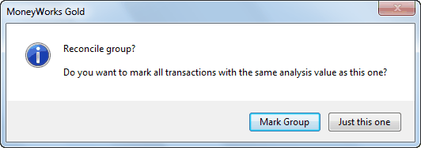
Click Mark Group to reconcile all transactions with the same analysis code, or
Just this one to just reconcile the clicked transaction.
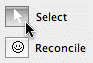
You can add and modify (unposted) transactions in this mode. You can also cancel posted transactions and re- enter them.A reversing transaction will be created and posted for you — see Cancel Transaction. You will then need to re-enter the transaction with the appropriate changes (see below)
Click the Reconcile button to return to reconciliation mode
If you have not put the transaction in, you can do so at this point. However before you do this, you should check that the transaction has not really been entered already. Specifically, it might be entered against the wrong bank account, or with an incorrect date (both of these will prevent it showing in your reconciliation list). To check this, you may have to click the Finish Later button to leave the reconciliation and try to locate the transaction in the Transaction list.
To create a new transaction while doing a bank reconciliation:
If you are not in the Select mode, click the Select button
Click the New toolbar button
Choose the appropriate transaction type from the Type menu
Enter the transaction in the normal way
It is very important to ensure when you enter the transaction that it is made out against the bank account you are reconciling and that it is dated correctly (before the statement date), otherwise the new transaction will not appear in your reconciliation list.
Clicking Select allows you to add or change transactions.
Unposted transactions will be included in the bank reconciliation if you set the Include Unposted Transactions check box in the bank reconciliation setup. If you have marked any unposted transactions as being reconciled, an alert will be
toolbar icon
displayed when you click the Finish button.
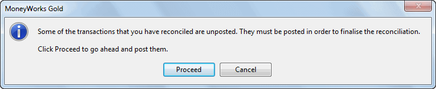
If you click Proceed, MoneyWorks will attempt to post the transactions. If for some reason it can’t, a warning will be displayed and you will not be able to finalise the reconciliation. Instead you should save it, correct the problem, and
The Bank Reconciliation settings window will open.
Click the Load Old... button
The Choices window will open, listing previous reconciliations9.
Click Load Old to view a previous Bank Rec.
repeat the reconciliation.
Any unposted transactions that were not reconciled will be listed at the end of the bank reconciliation report.
If you want to interrupt a bank reconciliation session and return to it at a later time, you can save the reconciliation.
The bank reconciliation window will close. When you next use the Bank Reconciliation command, the transactions that you previously reconciled will still have the face next to them.
MoneyWorks remembers the opening and closing balances, statement number and date that you last typed into the Bank Reconciliation setup dialog box and fills in these values for you when you next choose the Bank Reconciliation command. This saves you from retyping these values when returning to a saved reconciliation.
To reprint a previously completed reconciliation report:
The reconciliation window will open, showing the transactions reconciled previously and any unpresented items. You cannot modify this.
Clicking the New button will start a new reconciliation.
Click Print Summary to reprint the Reconciliation report
Note that the unpresented items in the reconciliation report may include transactions entered since you did the original bank reconciliation. Also, the reconstituted bank reconciliation will not be correct if any of the original transactions have been purged.
In principle the bank reconciliation is simple and foolproof. However in practice things may not work out quite so easily. The most common problems with bank reconciliations are:
The bank reconciliation list displays only transactions against the nominated bank account that are dated on or before the statement date and have not previously been reconciled. Therefore you need to locate the transaction in the Transactions list (not in the Bank Reconciliation list) and check its date and bank account number (which you can do by double clicking it if the information is not visible in the list), and also whether it has been previously reconciled (use the
<EquationVariables>Get Info</EquationVariables>) command to do this.
If a receipt shows “Banked on Banking Journal” next to the receipt number (you need to double click it to see this), it was originally entered against a bank holding account. Hence the transaction itself will not be reconcilable, but the banking journal will.
If you cannot locate the transaction, it probably hasn’t been entered.
If a transaction that you know you have already reconciled is showing in the list, then you are clearly mistaken, and you have not previously reconciled the transaction (MoneyWorks would not lie to you). You have almost certainly entered the transaction twice, and have reconciled one of them but not the other. Confirm that the transaction is not in the list, and cancel the unreconciled one (use the Get Info command to see which is not reconciled.)
There are at least two possible causes of this:
The first is that the opening balance that was used was incorrect. Check this against your bank statement. If it was incorrect, save the bank reconciliation, start another bank reconciliation and use the Change button to alter the opening balance. However you should ask yourself why MoneyWorks had an incorrect opening balance (perhaps you’ve missed out a statement, or you did not set an opening balance for this account when you set up MoneyWorks).
The second is that, in previous reconciliations, transactions have been reconciled that shouldn’t have been, or transactions weren’t reconciled that should have been. You will need to look at your previous reconciliation reports to find where the error first appeared, and then decide how to fix it. The most common cause of this incidentally is not reconciling the original opening bank balance that was entered— see Manually Entered Bank Balances.
Tip: The Bank Reconciliation Status report (in Reports>Audit) lists the reconciliation status and (optionally) history of all active bank accounts. Use this to determine whether previous reconciliations were completed correctly.
When things have gone seriously wrong with a prior bank reconciliation (despite the warnings that MoneyWorks provide, people do insist on trying to force the bank balances), it is sometimes easier just to clear the old bank reconciliations and redo them. To clear old bank reconciliations:
Select the bank reconciliation that you want to clear using the Load Old button as described in Reviewing and Reprinting a Previous Reconciliation
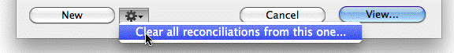
You will be asked for confirmation. Note that all subsequent reconciliations done against that bank account will also be cleared.
Presumably you will attempt not to repeat whatever mistakes were made in the previous attempt.
1 Including a holding account.↩︎
2 Invoices are not available in MoneyWorks Cashbook.↩︎
3 When the bank processes this transaction they will do the opposite, debit the source account and credit the destination account. When you deposit money with the bank, it a liability for them, so they record it as a credit. However it is an asset for you, so you record it as a debit. Confused? That’s why we have accountants.↩︎
4 A banking journal is a special type of general ledger journal. It credits the bank holding account and debits the nominated bank account(s).↩︎
Names
5 MoneyWorks supports QIF, OFX (SGML and XML), QBO, QFX formats, the most common ones used by banks.↩︎
6 This menu can also be augmented with custom importing scripts to import any format you wish, including CSV-based formats (in fact the OFX-XML importer is implemented using an open-source mwscript).↩︎
7 A reconcilable bank account has the Bank Account must be Reconciled option set↩︎
8 Is this an oxymoron?↩︎
9 The list only shows those reconciliations done using MoneyWorks 3 or later. If you want to reconstitute an earlier bank rec, hold down the Ctrl key (Windows) or the Option key (Mac) when you click the Load Old button. Note that MoneyWorks does not know the opening and closing balances of these earlier reconciliations.↩︎
In the course of operating your business, you will be in contact with other people and organisations. MoneyWorks stores the details of these contacts in the Names file, which is a list of organisations and contacts, with a set of tabs to organise it into type—customer, supplier, creditor etc. To view the Names list:
Choose Show>Names or press Ctrl-2/⌘-2
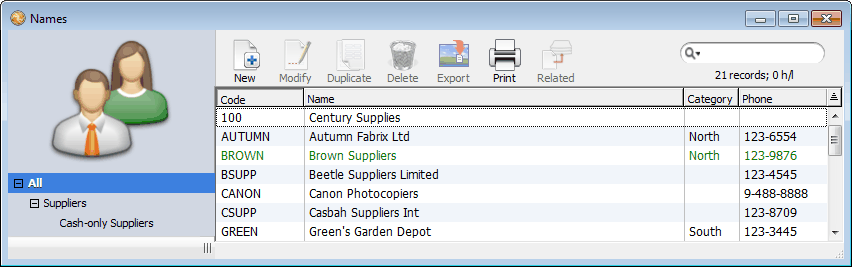
A name record stores contact and address information about customers, suppliers and other people or organisations that you might contact from time to time. In MoneyWorks we refer to these as Names. Each Name is referenced by a unique code, and the record is referred to for details whenever you make a transaction involving that person or organisation.
Each Name can have multiple contacts (i.e. individuals in the organisation), and you can store contact details, such as phone and email addresses, against these. The number of contacts per Name is effectively unlimited. Additionally contacts can be assigned a role, such as "Purchasing" or "Accounts".
As well as address information, the Name also stores aged balances for debtors, and the current owing for creditors. If you store bank account details, you can print out bank deposit slips for money received, or for creditors, create direct payment files for submitting to your bank’s on-line payment system1.
Using Name records can also speed up data entry. Not only can the customer or supplier name and address be automatically looked up, but a default general ledger allocation can be entered for you.
You can also keep a record of phone calls, meetings etc. that you have made with the Name, and have MoneyWorks remind you when follow-up action is required. This forms a simple CRM (Customer Relationship Management) system.
Note: If you are transferring information from another accounting or database system, you can probably import the information —see Exporting and Importing.
You can create a new Name directly in the Names list, or you can create one “on the fly” when you enter a new Name code into a transaction by clicking the New button in the choices list —see Creating a Record “On the Fly”.
The name record is organised into tabs as shown:
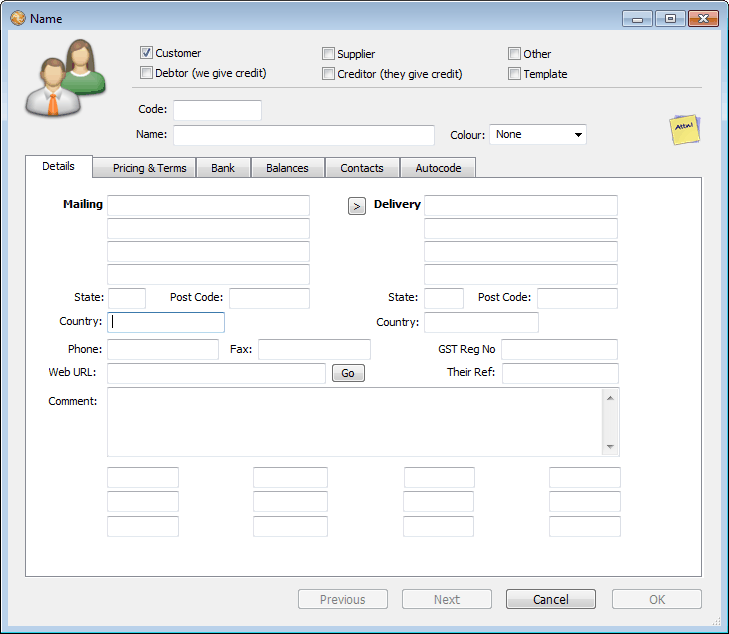
This can be up to eleven characters long, and is used to uniquely identify the Name. It is a good idea for the code to start with the same letters as the actual company’s or person’s name. This makes the code easier to remember or guess if you don’t have it to hand (e.g. SMITH for Smith Print Ltd is easier to remember than 17802).
In MoneyWorks Express and Gold, you can automatically create a unique code using the Code Assignment options
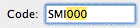
in the Terms Panel of the Document Preferences. The code will automatically be created using the letters you type in when creating the Name (just use the first few letters of the actual name). This will then be padded to the specified number of digits with a unique number. E.g.You can automatically append a unique number onto a new name code by setting Code
the first time you create a code 'SMI' it will be padded to 'SMI000', the next one will be 'SMI001' and so forth.
Template; The Template check box is used to create a
Assignment options in the Terms panel of the Document preferences.
Clicking the Go button will activate your browser and take you to the site—handy for accessing on-line price lists.
Enter their code for you in the Their Ref field
template record for new contacts in Gold and Express. You cannot use the template record itself, but if you enter the template’s code into a new transaction, a new Name record will be created automatically with the same information as in the template record. A number will be appended to the template code to make it unique.
Set the Colour if you want
You can use this to easily identify names. For example, you might have your customers of doubtful financial means in red.
These will be automatically set for you, depending upon the context in which the name is made. Note that a Creditor is a Supplier who gives you credit, and a Debtor is a Customer to whom you extend credit. Creditors and Debtors are not available in Cashbook.
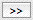
The Details tab contains basic address and the categorisation information.
This can be used on statements and direct credit banking files.
You can store up to 255 characters in this field.
The category fields can be used to analyse sales (or purchases) for the Name by whatever criteria you choose to store, e.g. a regional code in one category, or a code to identify low or high volume customers, wholesale or retail.
You should be consistent about what information is stored in the category fields. For example, if you are storing a regional code in the first category field then always use it for this—don’t be tempted to put other information such as size of business into the field. The powerful analysis reports in MoneyWorks can summarise purchasing and sales information for you by these fields—see Analysis Reports for further information.
Category fields
You can enter up to 7 characters into these fields. By default, the first of these categories displays in the Names list window (you can customise the list to remove this, or add the others—see Customising Your List.
The Custom fields are for your own use. The first two fields can contain up to 255 characters each, and the others up to 15.
If the postal and delivery addresses are the same, use the transfer button to copy the postal address into the delivery address.
The Transfer button copies the postal address to the delivery address.
The Pricing and Terms tab is where you set the pricing for customers, and the
Some jurisdictions require you to store the tax number of your suppliers and/or customers.
details for debtors and creditors. In Cashbook it is called Pricing and Coding, and is used for specifying tax-overrides and default allocations.
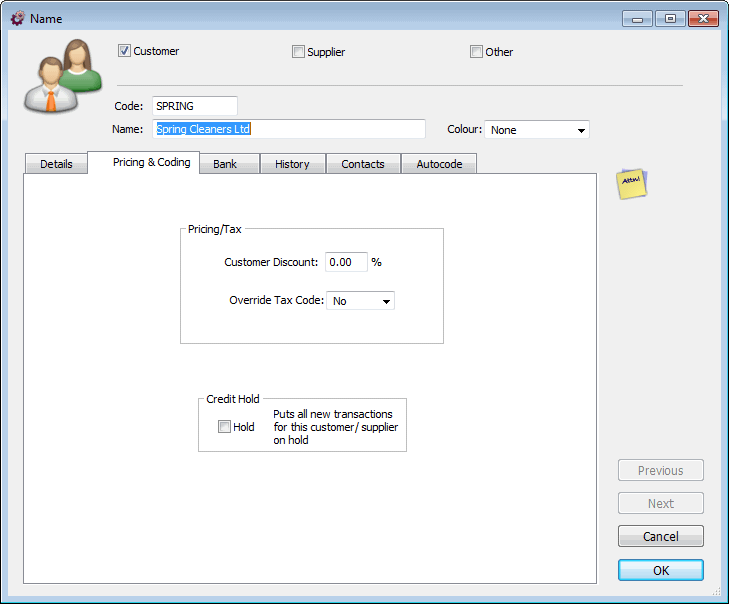
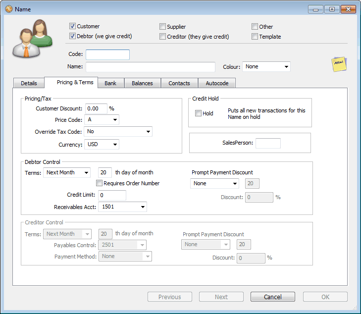
Customer Discount: The customer discount is an additional discount that the customer can use above and beyond that determined by the price code, for any product that has its discount field set to “Customer” or “Customer and Product” —see Sell Prices.
Price Code: Use the price code setting to determine the default product pricing level which the customer will attract —see Multiple Prices. This can be overridden at transaction entry time, and only applies if you have set up multiple prices.
Override Tax Code: In certain instances you might want to override the default tax code used in transaction entry (e.g. if the Customer/Supplier is located overseas there will probably be no GST/VAT or local Sales Tax). Set the pop-
up menu to the Tax code you want applied to all transactions from the contact. Note that this does not override the * code, or the Tax on the Freight Code product of an order.
Currency: In MoneyWorks Gold, if you have defined more than one currency (see Multi-Currency), you will be able to specify the currency of the customer/supplier. All transactions for that customer/supplier will be deemed to be in that currency. Note that once the record has been saved, you will not be able to change this.
Requires Order Number: If set, you will not be able to enter a sales order/ invoice from this customer unless there is a value in the order number field.
Debtor Terms: For debtors only, the terms that you are giving them. These are used to calculate the due date of invoices sent. The type of terms are set by the Terms pop-up menu, and can be either on a certain day of the following month, or within so many days. If the Overdue Warnings at Startup option is set in the Terms Preferences, you will be alerted when you start MoneyWorks if there are any overdue invoices.
Credit Limit: The amount of credit that you will extend to the debtor. A zero value represents unlimited credit. If the Auto Credit Hold option is set in the Terms Preferences, you will be alerted if the debtor exceeds the credit limit. If you don’t extend credit, make the Name a Customer and not a Debtor (which will limit transactions to cash ones).
Prompt Payment Discount: Use this to specify the prompt payment discount terms and percentage (if any) you are giving to this debtor. The discount is expressed as a percentage, and is applied to the transaction total based on the transaction date. It can expire on a given day of the following month, or last for the specified number of days. For details on receipting the discounts, see Prompt Payment Discounts.
Note: It is important that your prompt payments are correctly set up for your region. Please see the PPD preference settings.
Accounts Receivable Control Account: The general ledger account which will be debited whenever an invoice is raised against the debtor. You can create more than one control account if required, although one will suffice for most businesses.
Creditor Terms: For creditors only: the payment terms that you are given by the creditor. These are used to calculate the due date of invoices received, and operate in the same manner as debtor terms (see above).
Accounts Payable Control Account: The general ledger account which will be credited whenever an invoice is received from the creditor. You can create more than one control account if required, although one will suffice for most businesses.
Payment Method: The usual method by which you will pay the creditor. This is particularly useful if you are paying by direct credit through your bank’s on- line banking service —see Manual Electronic Payments.
Prompt Payment Discount: Use this to specify the prompt payment discount terms and percentage (if any) you have been offered by this supplier. The discount is expressed as a percentage, and is applied to the transaction total based on the transaction date. It can expire on a given day of the following month, or last for the specified number of days. For details on accepting the discount, see Paying Creditors Individually.
Note: It is important that your prompt payments are correctly set up for your region. Please see the PPD preference settings.
Hold: If the Hold checkbox is set, any transaction created against the Name will also have its Hold box set, so it cannot be posted. You can uncheck the hold box on the transaction if you do want to accept the transaction. This is a good way of giving discretionary control over whether you deal with certain contacts.
Salesperson: Set this field to the value that you want to be automatically transferred to the salesperson field when you use this Name in a transaction.
The bank details for the contact are maintained in the Bank tab. The first set of bank details are intended for creditors, and this is the information that will appear on the bank deposit slip when we bank money from the creditor.
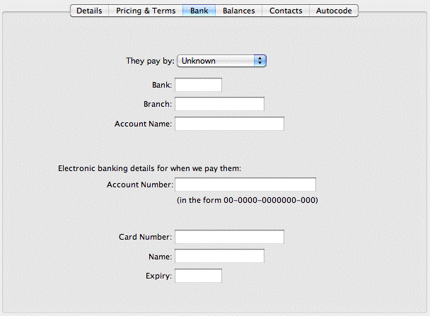
They Pay by: This is the payment method that the debtor normally uses to pay us. Whenever money is receipted from the debtor, the Paid By of the receipt will default to this.
Bank, Branch and Account Name: These details are used for preparing bank deposit forms when the customer pays by cheque. The details are displayed on the entry screen when receipting cash, so you can check at the time of entry whether they are using a different bank account. These can be overridden on individual transactions.
Electronic banking details for when we pay them: The actual bank account number that is used when preparing files for electronic banking. The account number should be filled out in the format indicated and will be automatically zero-filled if required —see Account Number. The ability to enter/edit this is a user privilege.
Credit Card Details: Their credit card details. When they pay by credit card these will be used unless overwritten on the transaction.
This tab displays a list of historic transactions against the name, and in MoneyWorks Express and Gold, the current debtor/creditor balances.
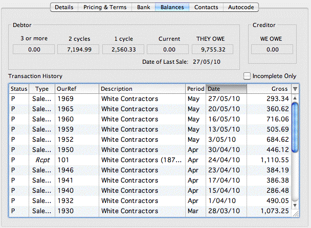
Debtor: This displays the aged balances for the debtor. You cannot alter these values—the balances are automatically increased whenever an invoice is posted, and reduced whenever payment is received. The aging is controlled by the Age Debtor Balances command—you can also calculate aged balances for various different aging intervals using the Aged Receivables report.
Creditor: This displays the current balance for the creditor (i.e. how much you owe this creditor). It cannot be altered. It is automatically increased whenever you post an invoice received from the creditor, and reduced when payment is made. The Aged Payables report will print out an aged listing of creditors.
Transaction History: This displays a list of all transactions against the Name. It can be sorted by clicking on any of the column headings, and the columns can be changed to show other information if required —See Customising Your List. You cannot search this list or double-click a transaction to view it.
Incomplete Only: Click this if you want to see just the outstanding invoices.
MoneyWorks allows you to have as many contacts for an organisation (Name) as you want. These are managed under the Contacts tab of the Name record.
Prior to MoneyWorks 8, only two contacts were available in MoneyWorks. These appear as the first and second contacts in the list (and are labelled 1 and 2).
Important: Changes and additions or deletions that you make to the contacts list are not saved until (and unless) the OK or Next button on the Name window itself is clicked. Clicking Cancel will discard any changes/additions to the contacts.
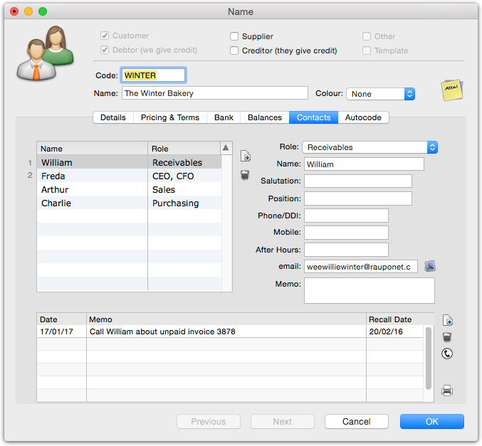
Click the New icon on the right of the contacts listA new (empty) contact will be added.
Fill out the appropriate details in the fields on the right Name:The person’s name
Salutation:The person’s salutation Position:Their position within the organisation Phone/DDI:Their phone number
Mobile:Their mobile number
After Hours:Their after hours number
eMail:Their eMail address
Memo:Free form notes about the contact
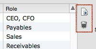
The New and Delete icons are used to create and remove contacts.
The contacts tab displays the contact details for people who belong to the organisation, as well as a list of recent contacts made.
If the contact has a specific Role, assign it from the role pop-up menu
The details for the contact will appear in the fields on the right
Change any of the information as required.
Click the Delete icon to the right of the list
The contact will be deleted.
Defining Roles
Roles are defined in the Document Preferences
Click on the Fields panel
The Contact Roles can be seen at the bottom right of the window
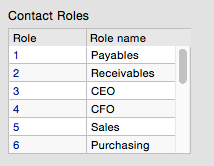
Roles are named on the Fields panel in the Document Preferences
Note: Deleting one of the first two contacts in the list, or changing their order by dragging, will have the side effect of updating the name.contact1 and/or contact2 fields.
Roles are used to help manage your contacts and your communications with them. They are essentially labels that you can optionally assign to a contact. Thus you might assign a role of “Payables” to a person at each of your suppliers—when you make payment, you would send the email remittance advice to people with the “Payables” role.
You can define up to 16 roles (in Edit>Document Preferences, see below), and more than one contact within the same organisation can have the same role. Similarly a contact might have more than one role (for example, they might have roles of both “Payables” and “Receivables”.
Note that, changing the name of a role does not affect the contacts who have been assigned that role (their role is merely relabelled as well).
Roles are assigned (and unassigned) to contacts using the Role pop-up menu. In the example below, Freda has both the CEO and the CFO role.
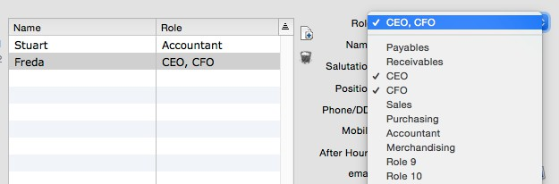
To assign a role, select it from the Role pop-up menu. The role will be added to the existing roles (if any) for that contact, and will be ticked in the pop-up menu.
To remove a role (one that is ticked in the Role pop-up menu), reselect it from the menu.
Note that the changes only come into effect when the Name itself is saved.
For compatibility reasons, the original contact1 and contact2 details are stored as before in the name table (these appear at the top of the contacts list, and are labelled 1 and 2). You can use the name.contact fields to import into these.
A new contact note will be created
Click the New icon to create a new contact memo.
Any additional contacts are stored in the Contacts table in MoneyWorks, and will need to be imported into that table (you will need the code of the customer/supplier to be part of the import).
Roles are imported by specifying their role “index” — this maps onto the role names as specified in the Preferences. Because there are 16 roles, and a contact can conceivably have several roles, membership of a role is identified as a bit setting in a 16-bit Role field. Thus #012 is role 1, #02 is role 2, #04 is role 3, #08 is
A reminder message will be generated for you when MoneyWorks is next opened on or after that date.
role 4, and #0D is roles 1, 3 and 4).
Importing updates to existing roles: To update an existing role for a contact, you must uniquely identify the contact record. Use the contact.sequencenumber for this. Note that contact1 and contact2 can be updated using the name.contact fields.
The contact history is a list of contacts made to the client. Use this list to record
The field you clicked on will be selected
Click the Delete button
The note will be deleted.
Click the Delete icon to delete a contact memo.
contacts made, or remind you of contacts to make in the future.
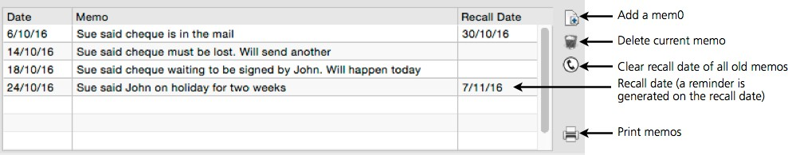
To print the list of memos, click the Print icon.
When you start up MoneyWorks on or after that date, a messages will be displayed if there are any recalls that are due on this date.
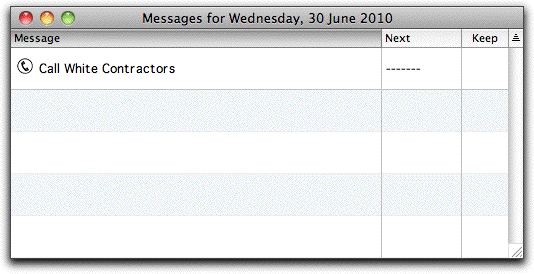
Double clicking on the message will take you to a list of the Name records that need to be followed up. Note that you will have to clear the subsequent recall date to stop the recall from coming up every day.
To Clear a Recall
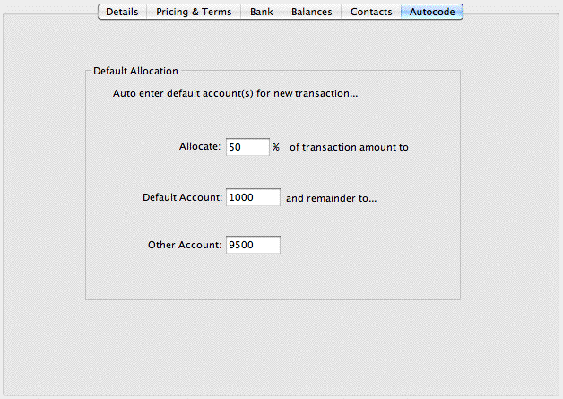
The AutoCode tab allows you to specify an automatic allocation that is applied to a new transaction for the customer or (more normally) the supplier:Unless you clear a recall, you will keep getting reminders every time you start MoneyWorks.
Delete the recall date from the memo
Click the Clear Recall icon to clear all old recall dates.
For example, if the Name record is for your electricity supplier you would set the
You can clear all the old messages (i.e. recall dates on or before today) for the name by clicking the Clear Recall icon.
You cannot sort the memo list. However you can re-order the list in the same way that you can re-order detail lines by holding down the option key (Mac) or the Ctrl and Shift keys (Windows) and dragging a memo line up or down.
allocation account to your Electricity Expense Account. Then, whenever you enter the name code into a transaction, the allocation will be automatically done to the electricity account for you.
Allocate Enter the percentage of the transaction amount that is to be allocated to the default account.
Default Account The general ledger code that will be automatically inserted into the first detail line of the transaction.
Other Account If the Allocate percentage was not 100%, enter the general ledger code for the balance of the amount. This will be automatically put into the second detail line of the transaction.
As an example, if you can only claim 30% of your electricity for business purposes (you have a home office), you would enter 30% in the Allocate amount, and have the Other Account set to Drawings, as shown.
Note: The Auto-Allocation is done whenever the value of the Amount field of the transaction is changed.